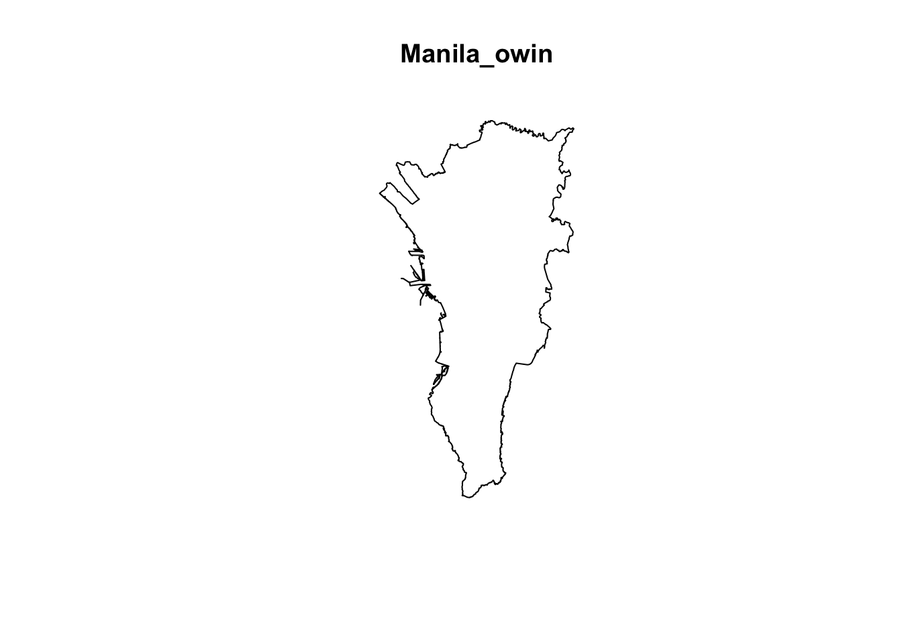
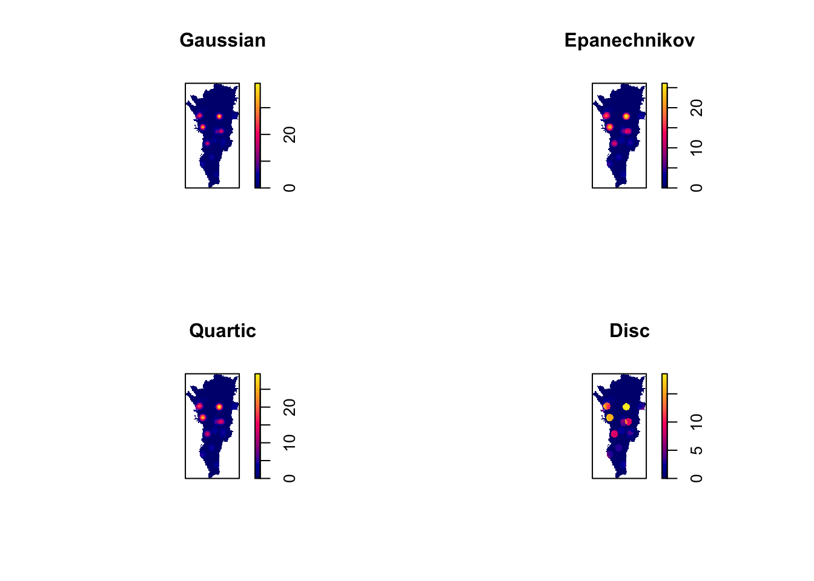
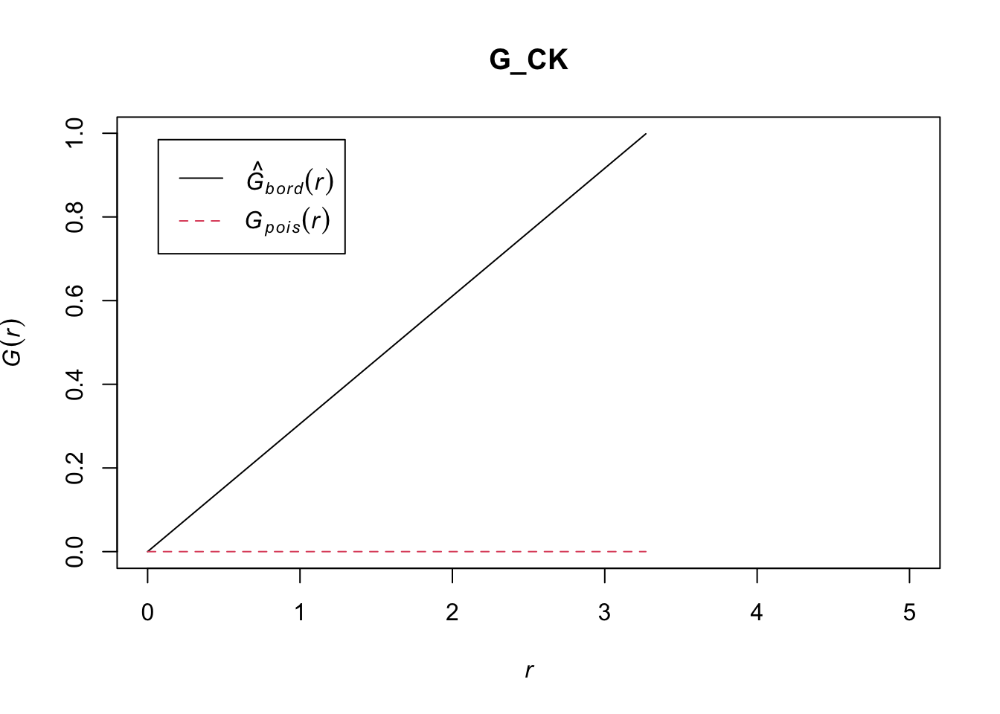

pacman::p_load(sf, raster, spatstat, tmap, tidyverse,sparr,spNetwork,dplyr,animation,stringr)Take-home_Ex03
#Take-home_Ex03
package
data
drug_case <- read_csv("data/2016-01-01-2024-06-30-Philippines.csv")%>%
st_as_sf(coords = c("longitude", "latitude"), crs = 4326) %>%
st_transform(crs = 32651) %>%
mutate(event_date = dmy(event_date)) %>%
mutate(event_month = year*100 + month(event_date)) %>%
mutate(event_quarter = year*10 + quarter(event_date))%>%
mutate(quarter = as.numeric(str_sub(event_quarter, 5, 5)))Rows: 6921 Columns: 31
── Column specification ────────────────────────────────────────────────────────
Delimiter: ","
chr (23): event_id_cnty, event_date, disorder_type, event_type, sub_event_ty...
dbl (8): year, time_precision, iso, latitude, longitude, geo_precision, fat...
ℹ Use `spec()` to retrieve the full column specification for this data.
ℹ Specify the column types or set `show_col_types = FALSE` to quiet this message.write_rds(drug_case,"data/drug_case.rds")# 按省份和年份分组并统计案例数量
summary_data <- drug_case %>%
group_by(admin2, year) %>%
summarise(total_cases = n(), .groups = "drop") # 统计每组的行数
# 查看结果
print(summary_data)Simple feature collection with 435 features and 3 fields
Geometry type: GEOMETRY
Dimension: XY
Bounding box: xmin: -128531.7 ymin: 518340.4 xmax: 864960.5 ymax: 2055587
Projected CRS: WGS 84 / UTM zone 51N
# A tibble: 435 × 4
admin2 year total_cases geometry
<chr> <dbl> <int> <GEOMETRY [m]>
1 Abra 2016 6 MULTIPOINT ((243552.1 1949406), (247247.5…
2 Abra 2017 2 MULTIPOINT ((246789.8 1947649), (259088.9…
3 Abra 2019 1 POINT (248189.3 1945782)
4 Abra 2020 1 POINT (249952.6 1952636)
5 Abra 2024 2 MULTIPOINT ((246603.5 1948039), (248189.3…
6 Agusan del Norte 2016 17 MULTIPOINT ((754728.1 990125.8), (757148.…
7 Agusan del Norte 2017 1 POINT (779704.2 990191.1)
8 Agusan del Norte 2021 1 POINT (779704.2 990191.1)
9 Agusan del Norte 2022 2 POINT (779704.2 990191.1)
10 Agusan del Norte 2024 1 POINT (779704.2 990191.1)
# ℹ 425 more rowsph_sf = st_read(dsn = "data/phl_adm_psa_namria_20231106_shp",layer = "phl_admbnda_adm2_psa_namria_20231106")Reading layer `phl_admbnda_adm2_psa_namria_20231106' from data source
`/Users/liangyuhang/Downloads/Maaaaaaaaaark/IS415_g/Take-home_Ex/Take-home_Ex03/data/phl_adm_psa_namria_20231106_shp'
using driver `ESRI Shapefile'
Simple feature collection with 88 features and 13 fields
Geometry type: MULTIPOLYGON
Dimension: XY
Bounding box: xmin: 114.2779 ymin: 4.587294 xmax: 126.605 ymax: 21.12189
Geodetic CRS: WGS 841st Order Spatial Point Patterns Analysis Methods（take 2016 whole year Manila as example）
filte the data and year
Manila_sf = ph_sf %>% filter(str_detect(ADM2_EN, "^Metropolitan Manila"))
Bulacan_sf = ph_sf %>% filter(str_detect(ADM2_EN,"^Bulacan"))
Cebu_sf = ph_sf %>% filter(str_detect(ADM2_EN, "^Cebu"))
Laguna_sf = ph_sf %>% filter(str_detect(ADM2_EN, "^Laguna"))
Pangasinan_sf = ph_sf %>% filter(str_detect(ADM2_EN, "^Pangasinan"))drug_case_2016 <- drug_case%>%
filter(year== 2016)drug_Manila_2016 = drug_case_2016 %>% filter(str_detect(admin2, "^Metropolitan Manila"))Converting sf data frames to sp’s Spatial* class
drug_Manila_2016_sf <- as_Spatial(drug_Manila_2016)drug_Manila_2016Simple feature collection with 783 features and 32 fields
Geometry type: POINT
Dimension: XY
Bounding box: xmin: 279767.7 ymin: 1593737 xmax: 296805.5 ymax: 1623566
Projected CRS: WGS 84 / UTM zone 51N
# A tibble: 783 × 33
event_id_cnty event_date year time_precision disorder_type event_type
* <chr> <date> <dbl> <dbl> <chr> <chr>
1 PHL6636 2016-12-30 2016 1 Political violence Violence ag…
2 PHL6635 2016-12-29 2016 1 Political violence Violence ag…
3 PHL6634 2016-12-28 2016 1 Political violence Violence ag…
4 PHL2095 2016-12-28 2016 1 Political violence Violence ag…
5 PHL2089 2016-12-27 2016 1 Political violence Violence ag…
6 PHL6631 2016-12-26 2016 1 Political violence Violence ag…
7 PHL2085 2016-12-26 2016 1 Political violence Violence ag…
8 PHL6628 2016-12-22 2016 1 Political violence Violence ag…
9 PHL6627 2016-12-22 2016 1 Political violence Violence ag…
10 PHL2068 2016-12-21 2016 1 Political violence Violence ag…
# ℹ 773 more rows
# ℹ 27 more variables: sub_event_type <chr>, actor1 <chr>, assoc_actor_1 <chr>,
# inter1 <chr>, actor2 <chr>, assoc_actor_2 <chr>, inter2 <chr>,
# interaction <chr>, civilian_targeting <chr>, iso <dbl>, region <chr>,
# country <chr>, admin1 <chr>, admin2 <chr>, admin3 <chr>, location <chr>,
# geo_precision <dbl>, source <chr>, source_scale <chr>, notes <chr>,
# fatalities <dbl>, tags <chr>, timestamp <dbl>, geometry <POINT [m]>, …Converting the Spatial* class into generic sp format
drug_Manila_2016_ppp <- as.ppp(drug_Manila_2016)Warning in as.ppp.sf(drug_Manila_2016): only first attribute column is used for
marksdrug_Manila_2016_pppMarked planar point pattern: 783 points
marks are of storage type 'character'
window: rectangle = [279767.7, 296805.51] x [1593737.4, 1623565.7] unitsplot(drug_Manila_2016_ppp)Warning in default.charmap(ntypes, chars): Too many types to display every type
as a different characterWarning: Only 10 out of 783 symbols are shown in the symbol mapCreating owin object
Manila_sf = st_transform(Manila_sf,crs = 32651)
Bulacan_sf = st_transform(Bulacan_sf,crs = 32651)
Pangasinan_sf = st_transform(Pangasinan_sf,crs = 32651)
Cebu_sf = st_transform(Cebu_sf,crs = 32651)
Laguna_sf = st_transform(Laguna_sf,crs = 32651)Manila_owin <- as.owin(Manila_sf)
Bulacan_owin <- as.owin(Bulacan_sf)
Pangasinan_owin <- as.owin(Pangasinan_sf)
Cebu_owin <- as.owin(Cebu_sf)
Laguna_owin <- as.owin(Laguna_sf)write_rds(Manila_owin,"data/owin/Manila_owin.rds")
write_rds(Bulacan_owin,"data/owin/Bulacan_owin.rds")
write_rds(Pangasinan_owin,"data/owin/Pangasinan_owin.rds")
write_rds(Cebu_owin,"data/owin/Cebu_owin.rds")
write_rds(Laguna_owin,"data/owin/Laguna_owin.rds")plot(Manila_owin)
Combining point events object and owin object
drugManila_ppp = drug_Manila_2016_ppp[Manila_owin]First-order Spatial Point Patterns Analysis
kde_childcareSG_bw <- density(drugManila_ppp,
sigma=bw.diggle,
edge=TRUE,
kernel="gaussian")plot(kde_childcareSG_bw)drugManila_ppp.km <- rescale.ppp(drugManila_ppp, 1000, "km")Working with different automatic badwidth methods
kde_drugManila.ppl <- density(drugManila_ppp.km,
sigma=bw.ppl,
edge=TRUE,
kernel="gaussian")Warning: Likelihood Cross-Validation criterion was maximised at left-hand end
of interval [0.807, 24.4]; use argument 'srange' to specify a wider interval
for bandwidth 'sigma'plot(kde_drugManila.ppl, main = "bw.ppl")working with different method
par(mfrow=c(2,2))
plot(density(drugManila_ppp.km,
sigma=bw.ppl,
edge=TRUE,
kernel="gaussian"),
main="Gaussian")Warning: Likelihood Cross-Validation criterion was maximised at left-hand end
of interval [0.807, 24.4]; use argument 'srange' to specify a wider interval
for bandwidth 'sigma'plot(density(drugManila_ppp.km,
sigma=bw.ppl,
edge=TRUE,
kernel="epanechnikov"),
main="Epanechnikov")Warning in density.ppp(drugManila_ppp.km, sigma = bw.ppl, edge = TRUE, kernel =
"epanechnikov"): Bandwidth selection will be based on Gaussian kernel
Warning in density.ppp(drugManila_ppp.km, sigma = bw.ppl, edge = TRUE, kernel =
"epanechnikov"): Likelihood Cross-Validation criterion was maximised at
left-hand end of interval [0.807, 24.4]; use argument 'srange' to specify a
wider interval for bandwidth 'sigma'plot(density(drugManila_ppp.km,
sigma=bw.ppl,
edge=TRUE,
kernel="quartic"),
main="Quartic")Warning in density.ppp(drugManila_ppp.km, sigma = bw.ppl, edge = TRUE, kernel =
"quartic"): Bandwidth selection will be based on Gaussian kernel
Warning in density.ppp(drugManila_ppp.km, sigma = bw.ppl, edge = TRUE, kernel =
"quartic"): Likelihood Cross-Validation criterion was maximised at left-hand
end of interval [0.807, 24.4]; use argument 'srange' to specify a wider
interval for bandwidth 'sigma'plot(density(drugManila_ppp.km,
sigma=bw.ppl,
edge=TRUE,
kernel="disc"),
main="Disc")Warning in density.ppp(drugManila_ppp.km, sigma = bw.ppl, edge = TRUE, kernel =
"disc"): Bandwidth selection will be based on Gaussian kernel
Warning in density.ppp(drugManila_ppp.km, sigma = bw.ppl, edge = TRUE, kernel =
"disc"): Likelihood Cross-Validation criterion was maximised at left-hand end
of interval [0.807, 24.4]; use argument 'srange' to specify a wider interval
for bandwidth 'sigma'
2nd Order Spatial Point Patterns Analysis Methods
G-function
G_CK = Gest(drugManila_ppp, correction = "border")
plot(G_CK, xlim=c(0,5))
G_CK.csr <- envelope(drugManila_ppp, Gest, nsim = 999)Generating 999 simulations of CSR ...
1, 2, 3, ......10.........20.........30.........40.........50.........60..
.......70.........80.........90.........100.........110.........120.........130
.........140.........150.........160.........170.........180.........190........
.200.........210.........220.........230.........240.........250.........260......
...270.........280.........290.........300.........310.........320.........330....
.....340.........350.........360.........370.........380.........390.........400..
.......410.........420.........430.........440.........450.........460.........470
.........480.........490.........500.........510.........520.........530........
.540.........550.........560.........570.........580.........590.........600......
...610.........620.........630.........640.........650.........660.........670....
.....680.........690.........700.........710.........720.........730.........740..
.......750.........760.........770.........780.........790.........800.........810
.........820.........830.........840.........850.........860.........870........
.880.........890.........900.........910.........920.........930.........940......
...950.........960.........970.........980.........990........
999.
Done.plot(G_CK.csr, xlim=c(0,5))L-function
F_CK.csr <- envelope(drugManila_ppp, Lest, nsim = 9)Generating 9 simulations of CSR ...
1, 2, [2:53 remaining] 3,
[2:29 remaining] 4, [2:07 remaining] 5, [1:41 remaining] 6,
[1:15 remaining] 7, [50 sec remaining] 8, [25 sec remaining]
9.
Done.L_ck.csr <- envelope(drugManila_ppp, Lest, nsim = 9, rank = 1, glocal=TRUE)Generating 9 simulations of CSR ...
1, 2, [3:08 remaining] 3,
[2:50 remaining] 4, [2:20 remaining] 5, [1:54 remaining] 6,
[1:25 remaining] 7, [56 sec remaining] 8, [28 sec remaining]
9.
Done.write_rds function (x, file, compress = c("none", "gz", "bz2", "xz"), version = 2,
refhook = NULL, text = FALSE, path = deprecated(), ...)
{
if (is_present(path)) {
deprecate_warn("1.4.0", "write_rds(path = )", "write_rds(file = )")
file <- path
}
compress <- match.arg(compress)
con <- switch(compress, none = file(file, ...), gz = gzfile(file,
...), bz2 = bzfile(file, ...), xz = xzfile(file, ...))
on.exit(close(con), add = TRUE)
saveRDS(x, con, version = version, refhook = refhook, ascii = text)
invisible(x)
}
<bytecode: 0x160e36750>
<environment: namespace:readr>plot(F_CK.csr)K-function
G_CK.csr <- envelope(drugManila_ppp, Gest, nsim = 999)Generating 999 simulations of CSR ...
1, 2, 3, ......10.........20.........30.........40.........50.........60..
.......70.........80.........90.........100.........110.........120.........130
.........140.........150.........160.........170.........180.........190........
.200.........210.........220.........230.........240.........250.........260......
...270.........280.........290.........300.........310.........320.........330....
.....340.........350.........360.........370.........380.........390.........400..
.......410.........420.........430.........440.........450.........460.........470
.........480.........490.........500.........510.........520.........530........
.540.........550.........560.........570.........580.........590.........600......
...610.........620.........630.........640.........650.........660.........670....
.....680.........690.........700.........710.........720.........730.........740..
.......750.........760.........770.........780.........790.........800.........810
.........820.........830.........840.........850.........860.........870........
.880.........890.........900.........910.........920.........930.........940......
...950.........960.........970.........980.........990........
999.
Done.ShinyApp Storyboard
In my part, I did three main things to analyze the case of drugs according to chronological order, 1st Order Spatial Point Patterns Analysis Methods and Spatio-Temporal Point Pattern Analysis
GeoVisualisation
In this section, the first thing I did was GeoVisualisation, and on shiny I set it up so that I could freely adjust the different dates according to the year and different months, making it easy for users to compare and view.
Time Series Analysis
In the Time Series Analysis module, the user can choose to view a quarterly or monthly histogram of the number of cases in the drop-down menu. Currently the Histogram tab shows the Annual Case Frequency Histogram, click on the Time Series Plot to view specific tabs according to the user’s needs.
1st Order Spatial Point Patterns Analysis Methods
This page shows the “First-order Analysis” module in the user’s Shiny application, which is used to analyze drug abuse data in the Philippines for the period 2016-2024. On the left side of the page, there are two checkboxes for selecting the year,area and function of the analysis, and a “Run First-order Analysis” button for performing the analysis.
The graph on the right shows the results of the analysis, presented as a density map generated by Kernel Density Estimation (KDE), showing the spatial density distribution of drug abuse incidents in different regions. The color gradient from blue to yellow indicates the level of density, with the closer the color is to yellow the higher the density. This map helps to identify geographically high incidence areas of drug abuse incidents.
By selecting different years and quarters, users can analyze the data spatially and temporally to observe the changes in the spatial distribution of drug abuse incidents over a specific time period.
Spatio-Temporal Point Pattern Analysis
The Second-order Analysis page allows you to select a year,area and function, and you can choose a specific time period to analyze in order to target a certain period of drug abuse. Meanwhile, the page provides different analysis functions, such as the G function, so that you can choose the appropriate function to analyze according to the purpose of the study. Click on the “Run Second-order Analysis” button to start the selected analysis.(The images below are not yet counted to show the corresponding images)